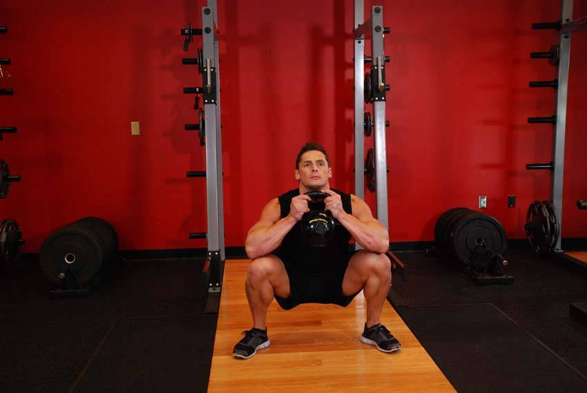

- Stand holding a light kettlebell by the horns close to your chest. This will be your starting position.
- Squat down between your legs until your hamstrings are on your calves. Keep your chest and head up and your back straight.
- At the bottom position, pause and use your elbows to push your knees out. Return to the starting position, and repeat for 10-20 repetitions.